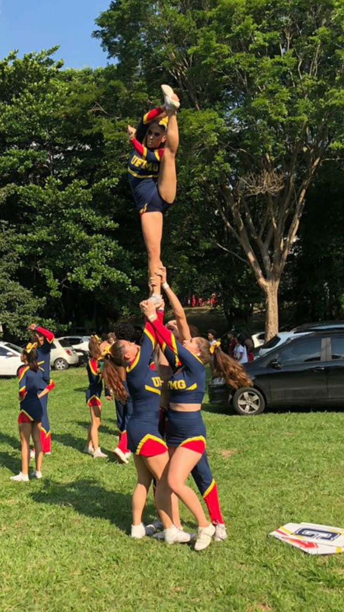

Partner
Esse stunt envolve habilidades em que a uma pessoa apenas carrega a/o flyer.Os elementos vão desde figuras da flyer até Sempre façam com segurança do lado.
- Nivel 1
- Nivel 2
- Nivel 3
Esse stunt envolve habilidades em que a uma pessoa apenas carrega a/o flyer.Os elementos vão desde figuras da flyer até Sempre façam com segurança do lado.
Esse stunt é tem duas pessoas carregando a/o flyer. Ele pode ser muito parecido com ou partner ou grupo stunt em relação as técnicas. Em relação ao partner é mais comum, assim existe uma central, que fica a maior parte do tempo de baixo da/o flyer, e uma lateral, que auxilia a central e dá giros certos movimentos (que seriam release em partner). Em relação ao grupo stunt ele pode ser com as duas pessoas de frente uma para outra e de lado, porém em baixo para a/o flyer.
 Esse stunt pode ter três pessoas ou quatro. Costuma-se ter uma central, uma lateral, e uma traseira que segura a/o flyer logo acima do tornozelo e ajuda a tirar peso e estabilizar o stunt.